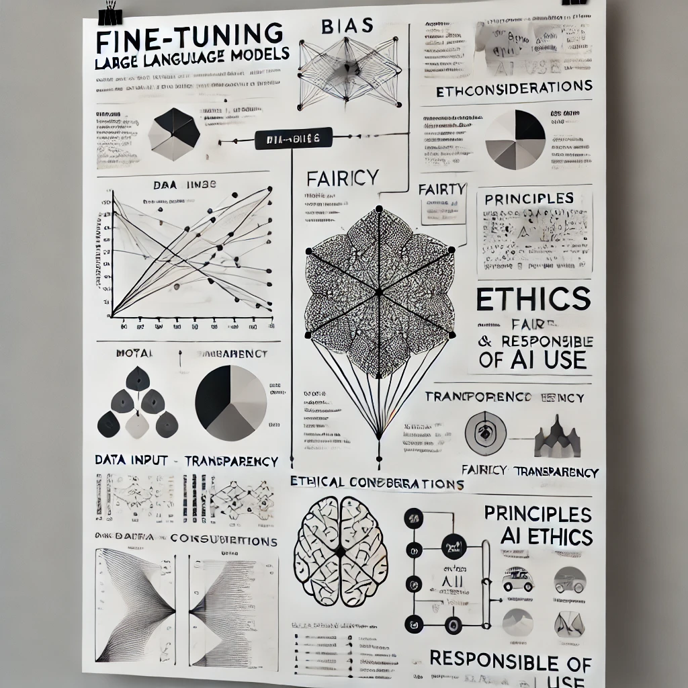
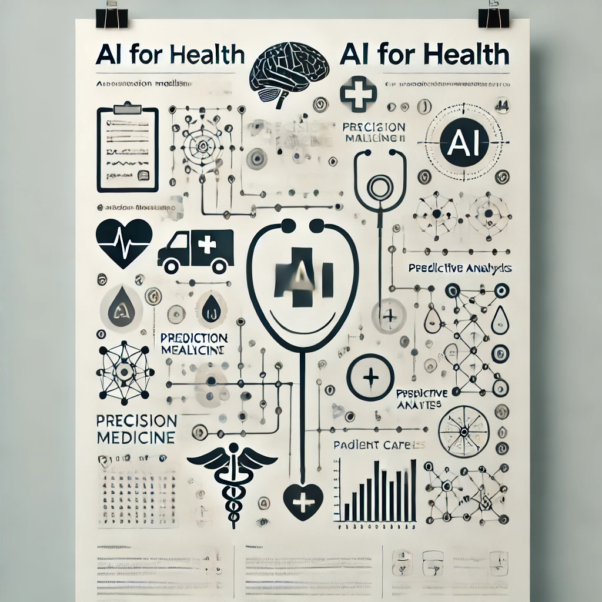

à propose
J'ai grandi à Mekelle et j'ai obtenu mon premier diplôme d'Ingénierie à l'Institut de Technologie de Mekelle (MIT), dans le département d'Informatique et d'Ingénierie. J'ai beaucoup apprécié mon temps au MIT, en particulier la vie que j'ai partagée avec mes amis.
J'ai passé quelques années en tant qu'assistant professeur à l'Institut de Technologie de Mekelle, à l'Université de Mekelle, et auparavant à l'Université d'Aksoum, où j'enseignais l'informatique jusqu'à ce que je parte pour la France en 2015 pour poursuivre mes études.
J'ai obtenu mon master en Apprentissage Automatique (Machine Learning) et Exploration de Données (Data Mining) à l'Université Jean-Monnet, à Saint-Étienne, en France. J'ai eu l'opportunité de réaliser deux stages de recherche dans des laboratoires de recherche nationaux français prestigieux, connus sous le nom d'INRIA et de CNRS.
En poursuivant mes études, j'ai choisi de faire un doctorat. Par conséquent, j'ai obtenu mon doctorat en Apprentissage Automatique et Traitement du Langage Naturel (NLP) à l'Université Paris-Saclay, au sein du centre de recherche CNRS, dans le laboratoire LIMSI (aujourd'hui LISN).
Ma passion pour l'IA, en particulier pour le NLP et le Machine Learning, m'a conduit à entreprendre un programme de PostDoc au centre de recherche IRD et au laboratoire UMMISCO, en collaboration avec l'entreprise Quinten (une entreprise spécialisée dans l'IA appliquée à la santé). J'ai acquis une expérience diversifiée qui m'a permis de proposer des solutions pratiques à des problèmes réels.
J'ai construit plusieurs modèles de langage à des fins différentes. Le premier modèle de langage biomédical que j'ai développé est AliBERT, un modèle de langage pré-entraîné en français pour le domaine biomédical. J'ai ensuite utilisé ce modèle pour proposer des solutions à divers problèmes biomédicaux pour plusieurs entreprises.
chercheur en TAL, grands modèles de langage, ML, et IA pour la santé
En tant que chercheur en Traitement Automatique du Langage (TAL), grands modèles de langage (LLMs), apprentissage automatique (ML), et intelligence artificielle (IA) pour la santé, ma passion se situe à l'intersection des technologies de pointe et de l'innovation dans le domaine de la santé. Je suis profondément engagé à explorer comment les techniques computationnelles avancées peuvent révolutionner le domaine médical, notamment par le développement et l'application de systèmes intelligents qui améliorent les résultats des patients et rationalisent les processus de soins de santé.
Domaines d'intérêt
Traitement Automatique du Langage (TAL)

Développer des modèles de TAL robustes capables de comprendre et de générer le langage humain avec une grande précision.
Se concentrer sur les subtilités des textes biomédicaux pour extraire des informations significatives à partir de vastes quantités de littérature médicale, de notes cliniques et de dossiers de patients.
Grands Modèles de Langage (LLMs)
Ajuster des LLMs pré-entraînés pour des tâches spécifiques au domaine de la santé, telles que les diagnostics médicaux, les recommandations de traitement et l'interaction avec les patients.
Étudier les implications éthiques et garantir l'utilisation responsable des LLMs dans des contextes médicaux sensibles.
Apprentissage Automatique (ML) et IA
Concevoir des algorithmes de ML capables de prédire les résultats des maladies, d'identifier les risques potentiels pour la santé et de personnaliser les plans de traitement.
Utiliser l'IA pour développer des systèmes de support à la décision qui aident les professionnels de la santé à prendre des décisions cliniques informées.
IA pour la santé
Utiliser l'IA pour améliorer la précision et l'efficacité de l'imagerie médicale, de la génomique et d'autres outils de diagnostic.
Mettre en œuvre des solutions basées sur l'IA pour améliorer l'accessibilité aux soins de santé et réduire les disparités dans les populations mal desservies.
Ma passion est motivée par la conviction que la technologie, lorsqu'elle est appliquée de manière réfléchie, a le potentiel de transformer la prestation des soins de santé et d'améliorer la qualité de vie des individus dans le monde entier. En comblant le fossé entre les avancées de l'IA et les applications médicales, je vise à contribuer à un avenir où les soins de santé sont plus personnalisés, efficaces et équitables.
Projets
Je participe dans les projets et de recherche differents. En Voici quelques uns .
- AliBERT
- ASLR
- Oncology
- Aligniment de codage médiceaux